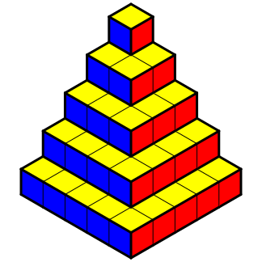
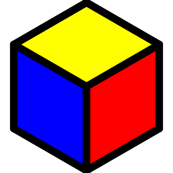

|
Chapitre 11
|
|
Partie 3
|
- Volumes
|
Définition :
Le volume est la mesure du contenue d'un solide en trois dimensions.
Exemple :
On définit une unité de volume et on compte le nombre de fois que celle-ci peut être mise dans notre solide pour obtenir son volume.

Ici on peut mettre 10 par 15 par 8 cubes d'unité de volume, soit 10×15×8=1200 cubes
Mesure :
Un centimètre cube est le volume d'un cube de 1cm de côté. On le note $cm^3$. C'est une des unités courantes du volume.
Remarques :
- Il existe plusieurs unités de volumes, on utilise dans le système international le mètre cube et ses sous unités ou le Litre
- 1 décimètre cube (1 $dm^3$) = 1 Litre (1 L)
Pour mesurer le volume d'un objet, on peut effectuer un dénombrement du nombre de cubes qu'il contient :


Ici la figure est composée de cube unité comme ci-dessus (de 1 $cm^3$).
Elle est formée de 5 couches composées comme suit :
- Couche 1 : 1 cube
- Couche 2 : 2 × 2 = 4 cubes
- Couche 3 : 3 × 3 = 9 cubes
- Couche 4 : 4 × 4 = 16 cubes
- Couche 5 : 5 × 5 = 25 cubes
Soit au total 1 + 4 + 9 + 16 + 25 = 55 cubes. Son volume est donc de 55 $cm^3$.